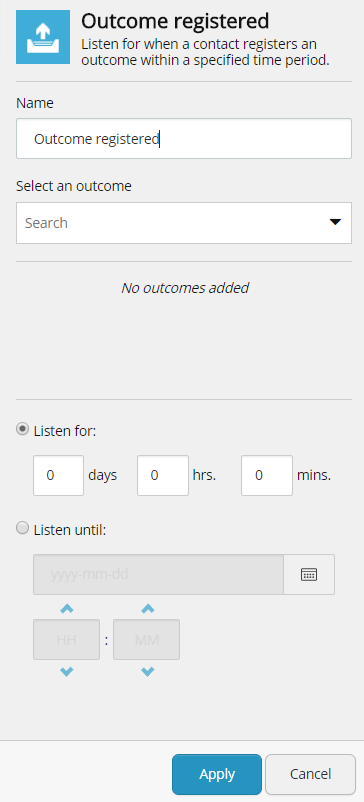

マーケティングオートメーションキャンペーンの要素¶
マーケティングオートメーションでは、一連の要素からオートメーションキャンペーンを構築します。開始要素と終了要素は、デフォルトでは新しいオートメーションキャンペーンに表示され、追加要素はツールボックスペインで利用できます。
マーケティングオートメーションキャンペーンの要素の簡単な概要については、以下のビデオをご覧ください。
オートメーションキャンペーンでは、以下のタイプの要素を使用することができます。
デフォルト要素 - コンタクトがオートメーションキャンペーンに登録されている場所とキャンペーンが終了する場所を示す開始と終了の要素。
マーケティングアクション - コンタクトのエンゲージメントバリューからポイントを追加または減算するなど、システム内のコンタクトに変更を加えるために使用できる要素。
リスナー - 特定の期間にコンタクトによって行われた特定のアクションをリッスンするために使用できる要素で、オートメーションキャンペーンを通じてコンタクトがどのように進むべきかを特定する。
デシジョンポイント - オートメーションキャンペーンでコンタクトがどのように進むべきかを特定するためのルールを指定できる要素。これらの要素を使用すると、指定したルールに対してすぐに評価されるため、連絡先を遅滞なくフィルタリングすることができます。
その他の要素 - キャンペーンでのコンタクトの移動を遅らせたり、キャンペーンの最初にコンタクトを移動させたり、別のキャンペーンにコンタクトを移動させたりするために使用できる要素。
{kind=link}
デフォルトの要素¶
Start 要素の詳細では、コンタクトがオートメーションキャンペーンに登録されたときの条件を指定します。End要素は、オートメーションキャンペーンの終了を示します。
Start¶
スタート要素を使用して、マーケティングオートメーションキャンペーンに登録したいコンタクトを定義し、いつ登録するかを定義します。例えば、連絡先がウェブサイトの特定のページを訪問したときにオートメーションキャンペーンに登録し、育成プログラムの一部として定期的なメールキャンペーンを受信するようにスケジュールを組むことができます。
開始要素の詳細ペインでは、以下に基づいてキャンペーンにコンタクトを登録するかどうかを選択できます。
特定の目標、イベント、または成果の達成。すべて」と「すべて」を切り替えて、コンタクトが指定された目標、イベント、または成果のうち1つ以上を満たす必要があるかどうかを指定できます。
スケジュールされた登録。これは、日、週、または月単位で設定することもできますし、3つすべてを組み合わせて使用したい場合は、プログラムで定義することもできます。週単位または月単位を使用する場合は、最大5日までしか選択できません。
注釈
スケジュール登録オプションは、セグメント化されたリストのみをサポートしています。
ルール セット エディタで作成したルール。

スケジュール登録オプションを使用している場合。
最大登録数を1に設定し、例えば毎日実行されるマーケティングオートメーションプランにコンタクトが登録されている場合、一度登録を完了すると、そのコンタクトはプランから削除されます。
予定された登録開始日よりも前にセグメント化されたリストに新しいコンタクトを追加した場合、プランの開始時に新しいコンタクトがマーケティングオートメーションプランに追加されます。
スケジュールされたプランが開始され、登録が完了した後にコンタクトがセグメント化されたリストから削除された場合、そのコンタクトはマーケティングオートメーションプランから削除されません。
スケジュールされた登録がプログラムで実装されている場合、マーケティングオートメーションのインターフェースを介してキャンペーンを編集することはできません。
End¶
End要素は、オートメーションキャンペーンの終了を示します。オートメーションキャンペーンの構築方法によっては、すべてのコンタクトがこの要素に到達するわけではありません。
マーケティングアクション¶
マーケティング アクション要素を使用して、エクスペリエンス データベース (xDB) に保存されている連絡先についての情報を変更することができます。
行動プロファイルの値を変更する¶
オートメーションキャンペーンでこの要素に到達したコンタクトの行動プロファイル値を変更するには、行動プロファイル値の変更アクションを使用します。
このアクションの詳細では、まず、コンタクトに対して変更するプロファイルキーを選択し、各プロファイルキーの新しい値を指定します。
{kind=link}
{kind=link}
放置されたカートのイベントを上げる¶
Raise abandoned cart event アクションを使用して、顧客が購入をせずにショッピングカートを放棄した場合に、放棄されたカートイベントをトリガーします。
このアクションに必要な設定はありません。
{kind=link}
コマースのメールを送る¶
コマースメールを送信するマーケティングアクションは、標準的なメール送信アクションとは異なり、顧客のカートからのコンテンツでメールメッセージをパーソナライズするために必要なショッピングカート情報が含まれています。ショッピング カート情報は、顧客がキャンペーンに登録されたときに、マーケティング オートメーション キャンペーンのカスタム値として含まれます。
使用されるカスタム値は以下の通りです。
ショップ名とカートIDは、放置カートのマーケティングオートメーションキャンペーンで使用されます。
ショップ名と注文 ID は、新規注文手配キャンペーンで使用されます。
送信コマースメールアクションは、マーケティングオートメーションキャンペーンからすべてのカスタム値をコピーし、メールエクスペリエンスマネージャのクエリパラメータとして使用します。
注釈
商用電子メールの送信アクションの代わりに電子メールの送信アクションを使用しないでください。
このアクションの詳細では、[メールキャンペーンの選択]ドロップダウンメニューで、関連するメールキャンペーンをクリックし、[適用]をクリックします。オートメーションされたメールキャンペーンのみを選択することができます。
{kind=link}
メールを送る¶
オートメーションキャンペーンのこの要素に到達した連絡先に選択した電子メールメッセージを送信するには、電子メール送信アクションを使用します。
このアクションの詳細では、［電子メールキャンペーンの選択］ドロップダウンメニューで、関連する電子メールキャンペーンをクリックしてから、［適用］をクリックします。オートメーションされた電子メールキャンペーンの間でのみ選択することができます。

連絡先をリストに追加する¶
オートメーションキャンペーンでこの要素に到達した連絡先を1つまたは複数の連絡先リストに追加するには、リストへの連絡先の追加アクションを使用します。
このアクションの詳細では、リストの選択ドロップダウンメニューで、関連する連絡先リストをクリックします。
{kind=link}
リストからの退会¶
オートメーションキャンペーンでこの要素に到達した連絡先を1つまたは複数の連絡先リストから削除するには、リストへの退会を解除するアクションを使用します。
このアクションの詳細では、リストの選択ドロップダウンメニューで、関連する連絡先リストをクリックします。
{kind=link}
同意の設定を更新する¶
オートメーションキャンペーンのこの要素に到達するコンタクトの同意設定を変更するには、同意設定の更新アクションを使用します。選択することができます。
マーケティングしない - コンタクトをすべてのリストから削除し、コンタクトが二度とマーケティングメッセージを受信しないようにします。
同意を取り消す - 連絡先がお客様からのメッセージを二度と受信しないようにします。
{kind=link}
メールアドレスの検証¶
オートメーションキャンペーンでこの要素に到達したコンタクトのメールアドレスを有効としてマークするには、メールアドレスの有効化アクションを使用します。メールアドレスは、例えば、コンタクトがこのメールアドレスに送信された電子メールメッセージのリンクに反応したり、クリックしたりした場合に有効です。

リスナー¶
リスナー要素を使用すると、コンタクトがオートメーションキャンペーンでどのように進むべきかを識別するためのルールを指定できます。リスナーから、コンタクトは、指定された期間内にコンタクトがルールで指定された条件をどのように満たすかに応じて、キャンペーンで Yes パスまたは No パスに沿って進むことができます。
リスナーは、コンタクトがオートメーションキャンペーンをさらに進めないようにします。
キャンペーンアクティビティトリガー¶
オートメーションキャンペーンのこの要素に到達したコンタクトが 1 つ以上のキャンペーンをトリガーしたかどうかを評価するために、キャンペーン アクティビティをトリガーしたリスナーを使用します。選択したキャンペーンをいつでもトリガーしたコンタクトは、Yes パスに沿って移動します。
リスナーの詳細では、リスナーの名前を入力し、関連するキャンペーンを選択してから、リスナーがこの要素に到達した連絡先を評価する時間を指定します。リスナーが特定の期間、または特定の日時まで連絡先を評価するかどうかを指定できます。
{kind=link}
カスタムリスナー¶
カスタムリスナーリスナーを使用して、オートメーションキャンペーンでこの要素に到達したコンタクトが、指定された期間内に指定されたルールの条件を満たしているかどうかを評価し、それに応じてYesパスまたはNoパスに沿って送信します。カスタムリスナーは、ルールセットエディタでカスタムルールで指定したものをリスナーとして設定することができます。
リスナーの詳細で、ルール セット エディタの [編集] をクリックしてルールを作成し、リスナーがこの要素に到達した連絡先を評価する期間を指定します。リスナーが特定の期間、または特定の日時まで連絡先を評価するかどうかを指定できます。
{kind=link}
注釈
コマースのマーケティングオートメーションキャンペーンには、以下のカスタムリスナーが含まれています。カートのアクティビティをチェックし、コンタクトのカートが操作された条件付きのルールが含まれています。
ゴールトリガー¶
ゴールトリガーリスナーを使用して、オートメーションキャンペーンのこの要素に到達したコンタクトが 1 つ以上のゴールをトリガーしたかどうかを評価します。選択したゴールをトリガーしたコンタクトは、Yes パスに沿って移動します。
リスナーの詳細では、リスナーの名前を入力し、関連するゴールを選択し、コンタクトが選択したすべてのゴールをトリガーしたか、1つのゴールだけをトリガーしたかを指定します。次に、リスナーがこの要素に到達した連絡先を評価する時間を指定します。リスナーが特定の期間、または特定の日時まで連絡先を評価するかどうかを指定できます。
{kind=link}
登録されている成果¶
アウトカム登録リスナーを使用して、オートメーションキャンペーンのこの要素に到達したコンタクトが 1 つ以上のアウトカムを登録しているかどうかを評価します。選択した成果物を登録した連絡先は、Yes パスに沿って移動します。
リスナーの詳細では、リスナーの名前を入力し、関連する成果物を選択し、接触者が選択したすべての目標をトリガーするか、またはそのうちの1つだけをトリガーするかを指定します。次に、リスナーがこの要素に到達した連絡先を評価する時間を指定します。リスナーが特定の期間、または特定の日時まで連絡先を評価するかどうかを指定できます。
{kind=link}
リスナーを訪問¶
訪問リスナーを使用して、オートメーションキャンペーンのこの要素に到達したコンタクトがウェブサイトを訪問したかどうかを評価します。ウェブサイトを訪問した連絡先は、Yes パスに沿って移動します。
リスナーの詳細では、リスナーの名前を入力し、リスナーがこの要素に到達した連絡先を評価する期間を指定します。リスナーが特定の期間、または特定の日時まで連絡先を評価するかどうかを指定できます。
{kind=link}
デシジョンポイント¶
デシジョンポイント要素は、コンタクトが継続するべきオートメーションキャンペーンのパスを決定するためのルールを評価します。
デシジョンポイント要素を使用して、キャンペーンの複数のパスにコンタクトをフィルタリングすることができます。たとえば、ゴールをトリガーするコンタクトをさらにフィルタリングするには、キャンペーンにゴールトリガーリスナーを追加し、その後、場所、年齢、好みなどに基づいてコンタクトをフィルタリングする多数の決定ポイントを追加します。
重要
キャンペーンでリスナーの後に決定点を配置した場合、そのリスナーを削除したい場合、決定点が表示されているリスナーの後のパスもすべて削除されます。
デシジョンポイント¶
オートメーションキャンペーンでこの要素に到達したコンタクトを特定のパスに沿って誘導するには、決定ポイント要素を使用します。コンタクトを評価するルールを作成し、コンタクトがルールの条件を満たしている場合、コンタクトは「はい」パスに沿って継続します。
{kind=link}
注釈
コマースマーケティングオートメーションキャンペーンには、コンタクトのカートが空であるという条件付きのルールを含む、カートが空であるかどうかの決定ポイントが含まれています。
その他の要素¶
これらの要素を使用して、キャンペーン中のコンタクトの移動を一時停止したり、コンタクトをキャンペーンの開始または別のキャンペーンに移動したりすることができます。
遅延¶
遅延要素を使用して、オートメーションキャンペーンを通じてコンタクトのさらなる動きを遅らせることができます。例えば、遅延を使用して、コンタクトにコンテンツの特定のパーソナライゼーションを限定された期間だけ受けることができます。
要素の詳細では、コンタクトを特定の期間、または特定の日時まで遅延させる必要があるかどうかを指定することができます。
{kind=link}
別のキャンペーンに移動する¶
重要
この要素は、複数のオートメーションキャンペーンの間でコンタクトをループさせる可能性があるため、注意して使用してください。連絡先を登録するオートメーションキャンペーンを選択する場合、選択したオートメーションキャンペーンがさらに多くのキャンペーンに連絡先を登録するかどうかを確認する必要があります。
オートメーションキャンペーンのこの要素に到達した連絡先を別のオートメーションキャンペーンに登録するには、別のキャンペーンに移動するアクションを使用します。
このアクションの詳細では、Select an automation campaignドロップダウンメニューで、連絡先を登録するオートメーションキャンペーンをクリックします。連絡先を他の1つのオートメーションキャンペーンに移動することだけを選択することができます。
注釈
キャンペーンでこのアクションを使用すると、この要素の後のパスに表示されるキャンペーンの要素が削除されます。
{kind=link}
キャンペーンからの削除¶
オートメーションキャンペーンからこの要素に到達した連絡先を削除するには、キャンペーンから削除アクションを使用します。この要素は、オートメーションキャンペーン内の任意の場所から連絡先を削除する柔軟性を提供します。
注釈
キャンペーンでこのアクションを使用すると、この要素の後のパスに表示されるキャンペーンの要素が削除されます。
{kind=link}
スタートに戻る¶
重要
この要素を使用すると、キャンペーン内でコンタクトをループさせ、そのコンタクトに対する繰り返しのマーケティングアクションの実行を引き起こす可能性があるため、注意が必要です。
オートメーションキャンペーンでこの要素に到達したコンタクトをキャンペーンの最初に移動させて、再度この要素を通過できるようにするには、開始アクションに戻るを使用します。コンタクトはStart要素の後の要素に移動され、Start要素によって再び評価されることはありません。
注釈
キャンペーンでこのアクションを使用すると、この要素の後にパス上にあるキャンペーンの要素が削除されます。
{kind=link}